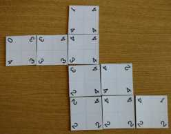
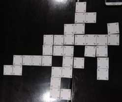

Cuadróminos es un juego de mesa; variante del dominó tradicional. Se utilizan piezas cuadradas con números o colores en sus vertices con lo cual se diferencias las piezas. Se asignan premios por la obtención de logros.
Reglamento del juego
Opinar sobre el juego
 